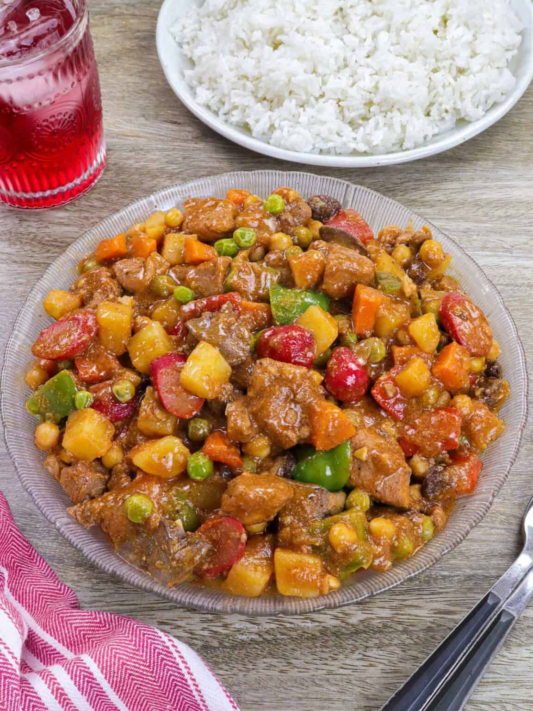

Pork Menudo

Ingredients
| 2 lbs. pork cubed |
| 1/4 lb. pig’s liver cubed |
| 4 hotdogs sliced diagonally |
| 2 medium baking potatoes peeled and cubed |
| 2 medium carrots peeled and cubed |
| 2 teaspoons minced garlic |
| 1 teaspoon minced ginger |
| 1/2 cup raisins |
| 3/4 cups frozen green peas |
| 3 pieces dried bay leaves |
| 15 oz. tomato sauce |
| 16 ounces beef broth or 2 cups beef stock |
| 3 tablespoons cooking oil |
| Salt and pepper to taste |
Preparation
| Step 1 |
| Heat the cooking oil in a wide cooking pot. Saute the hotdogs for 1 minute. Transfer the hotdogs in a plate while leaving the remaining cooking oil. |
| Step 2 |
| On the same cooking pot, add-in the ginger. Saute for 30 seconds to a minute.Put-in the liver. Continue to saute for 2 minutes. Transfer to a plate while leaving the remaining cooking oil in the cooking pot. Set the liver aside. |
| Step 3 |
| On the same cooking pot with remaining cooking oil, saute the onion and garlic until the onion becomes soft. Note: you can add more oil if there isn’t enough left.Add-in the pork. Continue to cook until light brown. |
| Step 4 |
| Add the raisins, pour-in the tomato sauce and beef broth. Bring to a boil. Add the dried bay leaves and simmer for 45 to 60 minutes or until the pork becomes tender.Put-in the sauteed liver and hotdog. Stir. |
| Step 5 |
| Add the carrots, green peas and potatoes. Cover and cook for 8 minutes. |
| Step 6 |
| Add salt and pepper to taste. Transfer to a serving plate. Serve. |